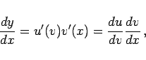
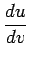
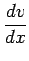
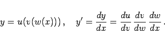
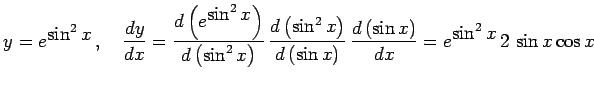
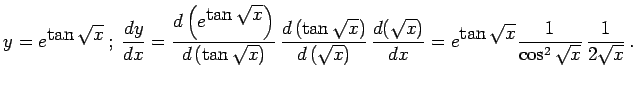

Inhalt Index DeskTop Bronstein

 Differentialrechnung Differentiation von Funktionen einer Veränderlichen Differentiationsregeln für Funktionen einer Veränderlichen Grundregeln für das Differenzieren
Differentialrechnung Differentiation von Funktionen einer Veränderlichen Differentiationsregeln für Funktionen einer Veränderlichen Grundregeln für das Differenzieren


Die mittelbare Funktion y = u(v(x)) hat die Ableitung
|  | (6.9) |
wobei die Funktionen u = u(v) und v=v(x) differenzierbare Funktionen bezüglich ihrer Argumente darstellen. Man bezeichnet u(v) als äußere und v(x) als innere Funktion und dementsprechend  als äußere Ableitung und  als innere Ableitung.
Analog verfährt man, wenn die ,,Kette`` aus einer größeren Anzahl von Funktionen mit den entsprechenden Zwischenveränderlichen besteht. So gilt z.B. für y=u(v(w(x))):
|  | (6.10) |
| Beispiel A |
|
. |
| Beispiel B |
|
 |